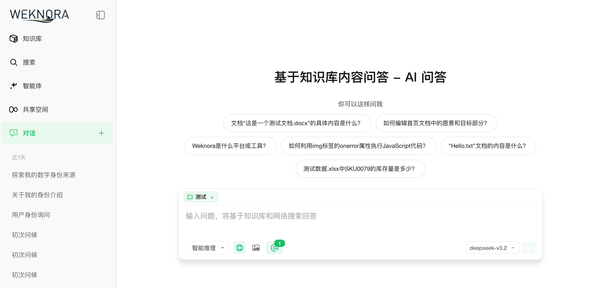
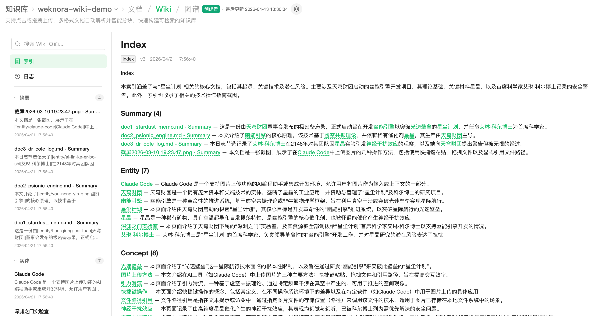
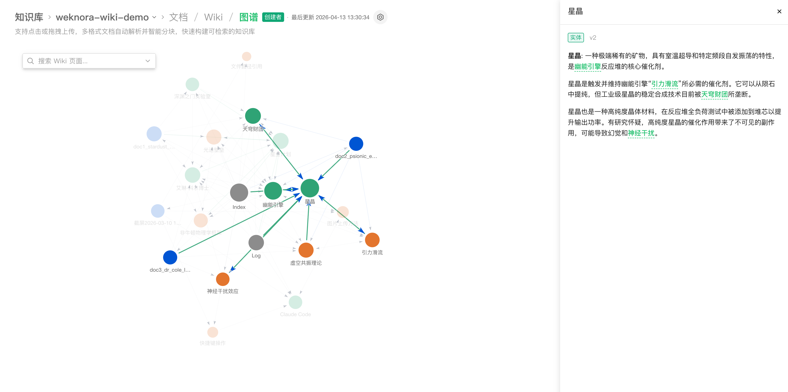

收音卡
采集授权范围内的沟通音频，辅助分析招生接待、家长咨询、服务反馈中的话术执行与情绪信号。
WEKNORA FOR EARLY EDUCATION
睿乐大脑是面向早幼教机构的 AI 企业赋能平台。通过智慧工牌、收音卡、手机运营资料和穿戴相机采集一线运营信号，以知识库为底座，让每一次执行可复盘，每一类偏差能被及时矫正。
我根据智慧工牌、收音卡、手机上传资料和穿戴相机片段，为你整理了本周一线运营信号。
01 / WHY
好的园所，不缺经验和流程。
缺的是让知识落到执行、让偏差及时回正的系统。
教研资料、招生话术、服务 SOP 和运营复盘常常散落在群聊、表格和网盘里；一线真实状况又分布在沟通音频、巡园画面、手机资料和工牌记录中。睿乐大脑先采集运营信号，再沉淀为知识库，并用 AI 帮团队识别执行偏差、生成改进建议、持续赋能一线动作。
FRONTLINE DATA CAPTURE
睿乐大脑不只等待人工填报，而是把现场动作、沟通内容、运营资料和巡园影像转化为可分析的运营信号。
采集授权范围内的沟通音频，辅助分析招生接待、家长咨询、服务反馈中的话术执行与情绪信号。
沉淀跟进记录、活动照片、巡班纪要、家长反馈和运营复盘，让现场资料直接进入知识库和分析链路。
还原巡园、接待、活动组织和服务执行片段，帮助团队看到流程是否真正落地，而不只看最终结果。
DATA TO ACTION
从智慧工牌、收音卡、手机资料、穿戴相机，到一条教研记录、一段招生话术和一次运营偏差，都能被采集、沉淀、分析和改进。
支持智慧工牌、收音卡、手机运营资料、穿戴相机，以及 PDF、Word、图片、Excel、PPT、网页、SOP 文档等数据与资料格式。
通过智慧工牌、收音卡、手机运营资料和穿戴相机，采集接待、沟通、巡园、跟进和服务执行过程中的关键运营信号。
上传制度、课程、招生话术、运营 SOP 与案例，AI 会先理解，再回答。每一个结论都带有来源，方便团队核对和继续追问。

从原始材料中自动提炼目录、摘要和关联内容，形成结构化 Wiki。新资料加入后，知识体系也会持续更新。

智能体可以组合知识检索、网络搜索和工具调用，协助完成主题活动设计、培训资料整理、招生复盘和运营分析。

结合 SOP、运营记录、家长反馈和团队复盘，识别未跟进、未闭环、话术偏离、服务动作缺失等行为偏差，并输出可执行的矫正建议。
MADE FOR THE WHOLE SCHOOL
不替代人的判断，而是把现场信号、资料知识和管理动作放在同一个系统里，让园长、运营、教研和一线老师都能基于事实行动。
识别招生跟进超时、服务闭环缺失、SOP 执行偏离等问题，并给出下一步动作建议。
为园长、招生、教研、保教、客服配置不同智能体，把优秀做法复制到更多岗位和园区。
把安全预案、保育流程、应急规范变成易查询、易理解的工作支持。
根据园所理念和真实案例，辅助整理家长会、成长反馈与日常沟通素材。
从入职手册到优秀案例，按角色和阶段提供个性化的学习与工作参考。
ROLE-BASED ENABLEMENT
从园长的经营判断，到一线老师的即时支持，睿乐大脑把采集信号、知识库和改进建议按角色组织起来。
跨园区查看招生、服务、保教和教研执行偏差，快速判断本周最值得投入的管理动作。
从话术、跟进、到访、反馈中发现未闭环动作，形成下一步提醒、复盘材料和团队训练重点。
将课例、观察、活动复盘和教师经验转化为结构化知识，支持主题设计、教研讨论和新教师带教。
遇到沟通、保教、活动组织和班级管理问题时，直接向园本知识库提问，获得可追溯的建议。
FROM SIGNALS TO BEHAVIOR CHANGE
先采集真实运营信号，再沉淀知识和流程，让 AI 从“回答问题”进一步走向“发现问题、辅助纠偏、赋能团队”。
预约产品演示智慧工牌、收音卡、手机运营资料、穿戴相机。
教案、SOP、话术、制度、表格、复盘和本地资料。
解析资料和采集信号，建立可检索、可追溯的知识索引。
在 Web、企业微信、飞书或网站 Widget 中直接提问。
从现场音频、巡园画面、跟进记录和服务反馈中发现未闭环动作。
把改进建议沉淀回知识库，形成团队可复用的方法。
BUILT FOR REAL-WORLD TEAMS
智慧工牌、音频、影像和手机资料按授权范围接入，并支持脱敏与分级查看。
部署在本地或私有云，园所资料和采集数据始终由自己掌握。
按园区、部门和角色管理知识库、采集数据与访问权限。
围绕岗位、园区和业务流程配置智能体，让能力复制到组织。
追踪回答来源、任务进度和执行偏差，方便持续优化管理动作。
QUESTIONS, ANSWERED
睿乐大脑面向早幼教场景构建，能力可以从数据采集和知识库开始，再逐步扩展到 AI 企业赋能和运营行为矫正。
普通工具回答的是通用知识，睿乐大脑回答的是你们园所沉淀过的内容。它会基于指定知识库检索、组织和引用资料，回答可以回到原文核对。
可以。支持 PDF、Word、Markdown、网页、图片、Excel、PPT 等多种格式，也可以从飞书、Notion、语雀等外部平台同步内容。
可以接入智慧工牌、收音卡、手机上传的运营资料和穿戴相机，用于了解接待、沟通、巡园、跟进、服务执行等一线运营状况。
支持本地或私有云部署，并提供授权采集、脱敏处理、多空间 RBAC、按知识库授权、API Key 范围控制和审计日志等企业级能力。
它不是简单打分，而是基于知识库、SOP、跟进记录和反馈内容，识别执行动作中的偏差，比如跟进超时、服务未闭环、话术偏离、复盘缺失，并给出可追踪的改进建议。
可以从一个教研小组、运营小组或单所园开始，先解决高频问答和资料查找，再逐步扩展到多园区协作、智能体和运营行为矫正。